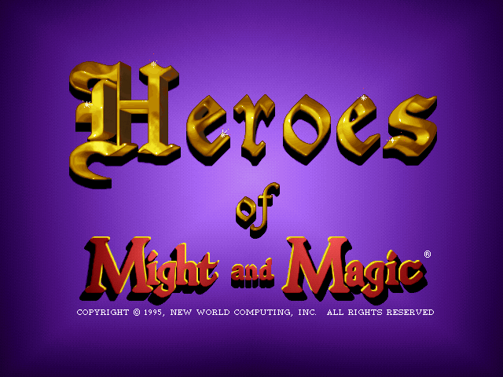
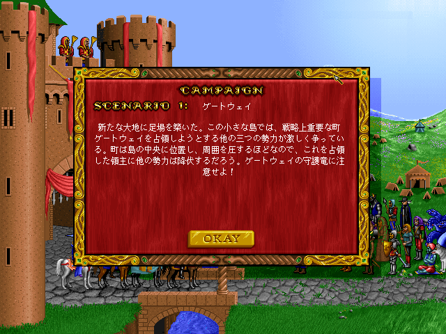
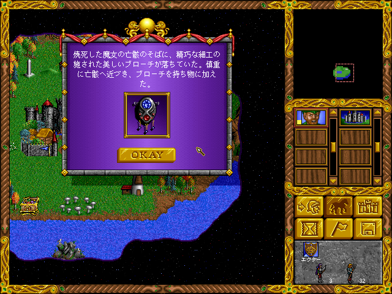
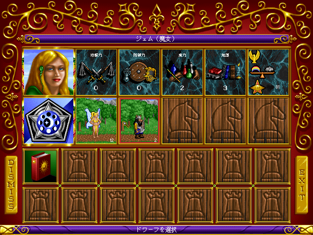
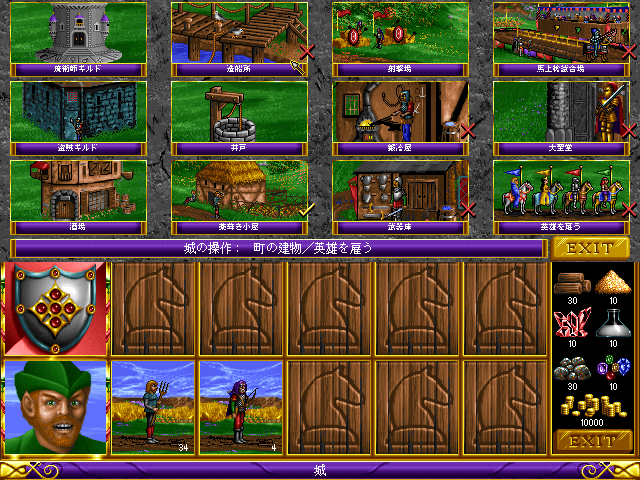
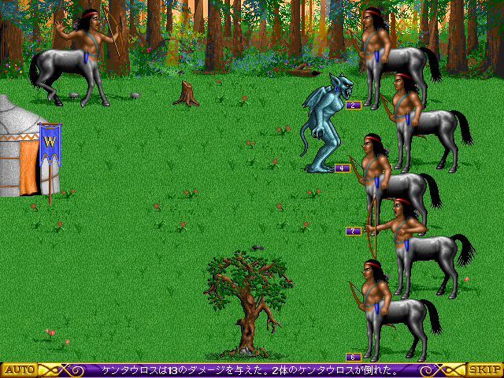
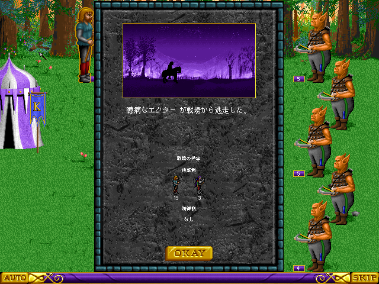

どんなゲーム？
ヒーローズ・オブ・マイト・アンド・マジックは、1995年にニュー・ワールド・コンピューティングが発表したターン制のストラテジーゲームで、シリーズの第1作です。 英雄を率いて冒険マップを巡り、町を育て、クリーチャーの軍勢を集めて敵と戦います。
舞台はエンロス大陸。騎士のアイアンフィスト卿、蛮族のスレイヤー卿、魔女のラマンダ女王、妖術師のアラマー卿の4人の領主が、大陸の覇権を争います。 キャンペーンでは、ひとりの領主を選んで大陸の統一を目指します。
Heroes of Might and Magic: A Strategic Quest
GOG.com 版の「Heroes of Might and Magic」（シリーズ第1作）を日本語で遊べるようにする、非公式のファンメイド日本語化パッチです。 メニューや設定の画面、ヘルプ、英雄・クリーチャー・アーティファクト・呪文・建物の名前と説明、冒険マップの出来事、戦闘の知らせ、 キャンペーンの物語と、付属のシナリオの名前と説明まで日本語にしています。 ファイルをひとつゲームの DOSBox のフォルダに置くだけで日本語になり、消せば英語に戻ります。
ヒーローズ・オブ・マイト・アンド・マジックは、1995年にニュー・ワールド・コンピューティングが発表したターン制のストラテジーゲームで、シリーズの第1作です。 英雄を率いて冒険マップを巡り、町を育て、クリーチャーの軍勢を集めて敵と戦います。
舞台はエンロス大陸。騎士のアイアンフィスト卿、蛮族のスレイヤー卿、魔女のラマンダ女王、妖術師のアラマー卿の4人の領主が、大陸の覇権を争います。 キャンペーンでは、ひとりの領主を選んで大陸の統一を目指します。







HoMM1_JP.zip の中の winmm.dll を、ゲームのフォルダの中にある DOSBOX フォルダ（DOSBox.exe があるフォルダ）に置きます。
GOG GALAXY では、ゲームの「管理」→「インストールを管理」→「フォルダを表示」でゲームのフォルダを開けます。ゲームのファイルは書き換えません。
DOSBOX フォルダから winmm.dll を消します。%LOCALAPPDATA%\H1JP に日本語のデータ（約 20MB）を作って使います。そのため最初の起動は少し時間がかかります。消しても次の起動で作り直されます。誤訳や不自然な訳に気づいたら、GitHub の Issues で教えてください。